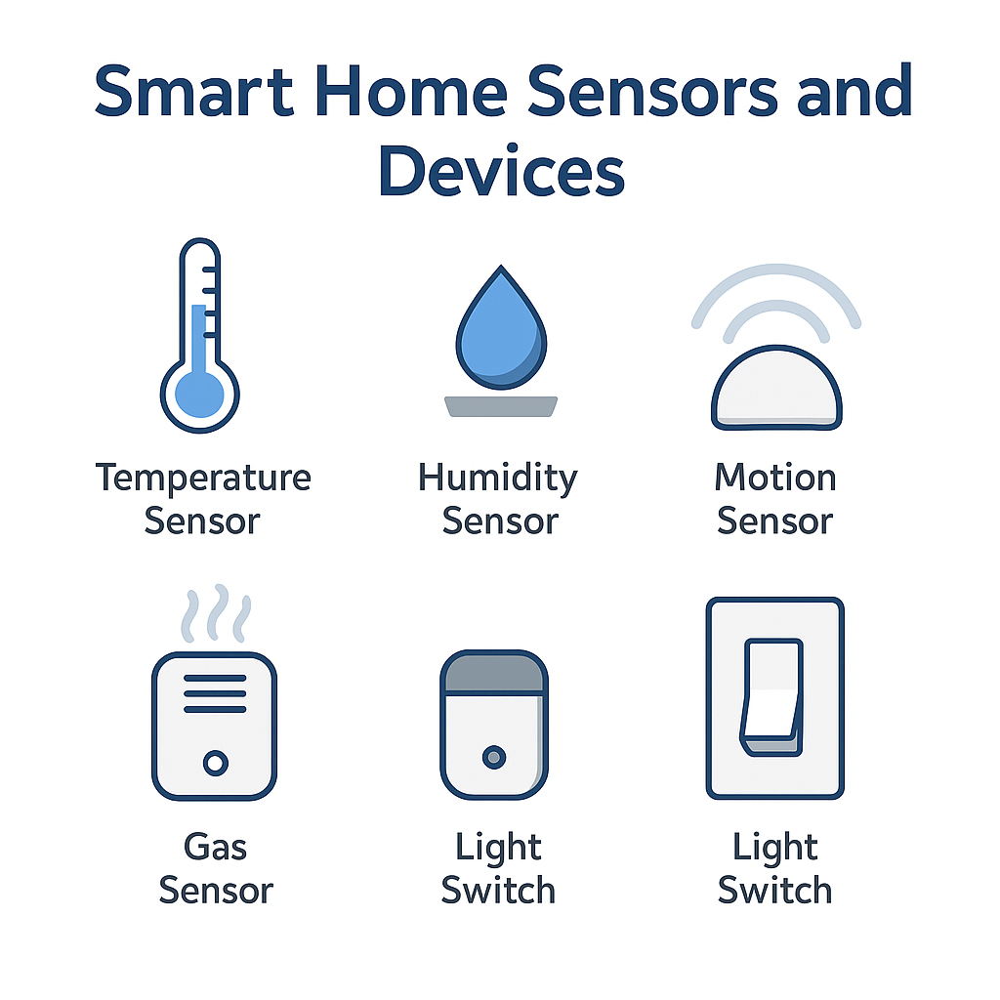
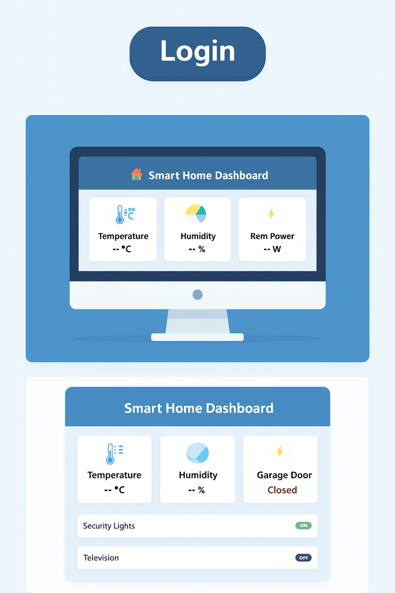
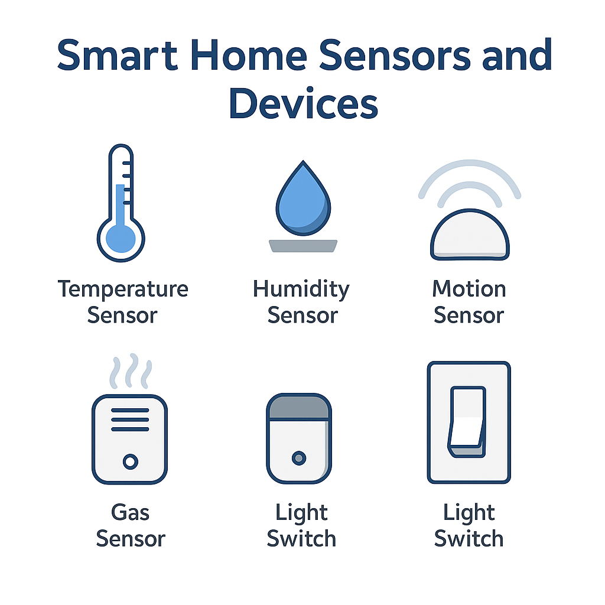
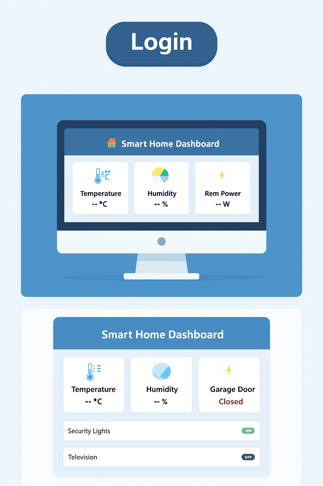
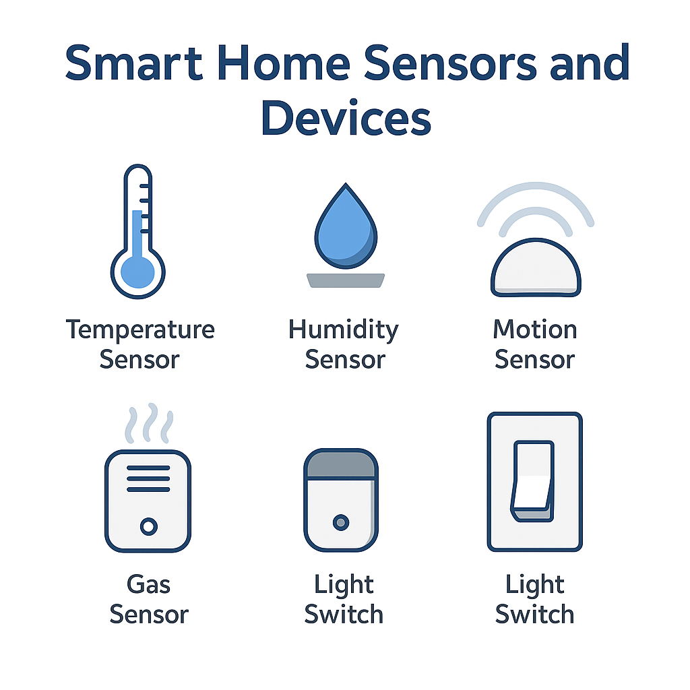
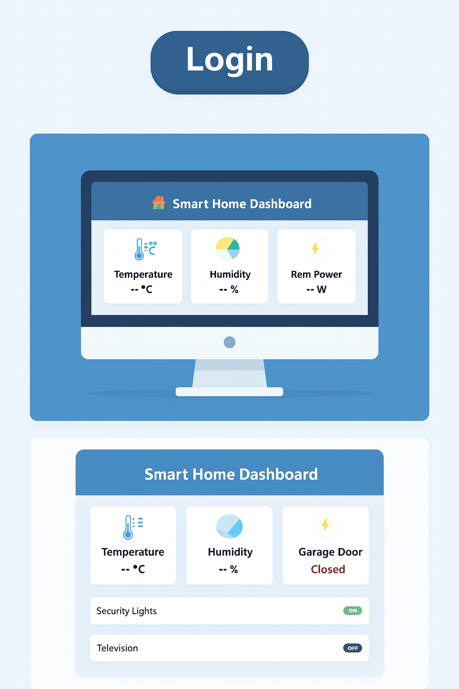

This project is a comprehensive effort to build an intelligent home automation system focused on energy conservation and environmental control. It integrates hardware, server side development, and machine learning to create a proactive and efficient control system. The objective is to move beyond simple automation and create a system that intelligently manages a home environment. The goal is to conserve power and maintain optimal comfort levels by making decisions based on real time data, rather than just pre programmed schedules.
The system's foundation is built on an Arduino controller which is responsible for gathering real time data from various sensors (temperature, humidity, time of day, power usage). This data is communicated to a central server, which acts as a data hub. A custom built AI model is being developed to analyse historical and real time power usage data. Based on these insights, the model makes autonomous control decisions—such as adjusting temperature set points or managing device power—to maximise efficiency and achieve a desired outcome.
Hardware Prototyping: Arduino, Sensors
Server Side Development: Flask (Python)
AI & Machine Learning: Custom AI Model
Functionality: Real Time Monitoring, Energy Conservation, Environmental Control

